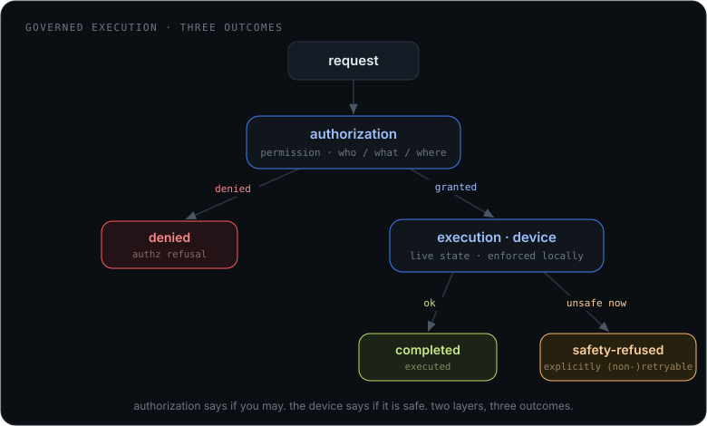

The secure layer between
agents and hardware
Anthropic's Model Hardware Standard defines how an agent drives a device.
mcp-broker is the layer above it: identity, hierarchical
authorization, per-caller confidentiality, and audit. Device-facing meets agent-facing.
One is a research preview; the other ships today on npm.
mcp-broker is MHS-ready by design, not
MHS-certified. Source:
Previewing the Model Hardware Standard.
A device standard just landed. The layer above it did not.
MHS gives agents a common interface to physical devices: drivers, a shared state dictionary, command execution, live streams, and checks that block unsafe operations before equipment moves. That is real, and it is the right primitive. But a research preview deliberately leaves the operational layer open.
MHS - device-facing (preview)
How an agent talks to one device
- Device drivers and shared state
- Command execution and live data streams
- Safety checks close to the hardware
- Identity and authorization not yet specified
- Discovery and multi-tenant boundaries open
- Specification private
mcp-broker - agent-facing (today)
How many agents safely reach many devices
- OAuth 2.1 resource server, per-slot tokens
- Hierarchical ISA-95 authorization
- Per-caller confidentiality on the aggregate
- Provider authentication and audit trail
- Self-describing discovery via
_broker - Published, Apache-2.0, running in the field
An MHS device is just another provider
The broker already routes software providers, data providers, and browser scenes. A hardware endpoint joins the same way: behind a named provider slot. The MHS-specific work stays contained behind that boundary, so a private, changing specification never leaks into the routing core.
The MHS-backed provider is where your existing C++ device code lives: a thin adapter that wraps the SDK you already ship, connects to the broker over WebSocket, and speaks MCP. The broker never has to know it is talking to hardware.
What the preview leaves open, the broker already enforces
This is the part that is hard to build and impossible to fake in a demo. It is running now, with tests, on npm.
Resource-server authorization OAuth 2.1
Every slot is a distinct protected resource (RFC 9728 / 8707). Bearer tokens are validated statelessly against the authorization server's JWKS, audience-bound per slot.
Hierarchical policy ISA-95
Roles, assignments, and explicit denies over resource paths like
/enterprise/site/area/line/cell/asset. Who, what, and where,
evaluated per operation.
Per-caller confidentiality _all
The aggregate shows a client only the providers its token is scoped for. A forbidden device returns the same error as one that does not exist. No existence leak.
Provider authentication anti-spoof
An engine must authenticate to occupy a slot, so a stranger cannot impersonate a device backend on the network.
Self-describing discovery _broker
The broker is itself an MCP server: agents ask which hardware-backed providers are connected and how they are reached, with no out-of-band manifest.
Signed device bundles .mcpb
Local providers ship as signed .mcpb bundles, verified
against a trusted key before they are ever spawned.
MHS concepts to MCP, once the spec is public
A plausible mapping, to be confirmed against the published specification. Low-rate state fits MCP cleanly; high-frequency streams should stay on a dedicated data plane while MCP carries discovery, intent, and control.
| MHS concept (from the preview) | MCP representation |
|---|---|
| Device operation or command | Tool |
| Device state slot | Resource |
| Image, time series, spectrum, telemetry stream | Resource + change notifications, or a dedicated streaming transport |
| Device inventory and capabilities | Resources and resource templates |
| Safety condition or interlock | Resource state + a mandatory precondition checked by the bridge |
| Driver metadata | Provider metadata exposed through the broker |
Natural language is guidance, not a safety mechanism
The component closest to the hardware must reject invalid or unsafe commands deterministically. Descriptions steer the model; they never gate a physical action. An MHS-backed provider must, at minimum:
- Read current device state before executing a state-dependent operation.
- Enforce interlocks independently of the agent.
- Distinguish command acceptance from physical completion.
- Return structured failure information when a device is unavailable or in a fault state.
- Retain an audit trail: client, provider, command, parameters, result.

Run the control plane now
The broker is a CLI. Point your existing device adapter at a provider slot, put a token in front of it, and you have a secured agent-to-hardware path today. MHS drops in behind the same boundary when it ships.
# Start the broker
$ npx @cyanmycelium/mcp-broker
# Your device adapter connects as a provider slot
→ ws://localhost:3000/provider/microscope-1
# An agent reaches it, gated by OAuth 2.1 + ISA-95 policy
→ POST http://localhost:3000/microscope-1/mcp
Background: the full positioning note, including the questions to revisit once MHS is published, lives at docs/mhs-positioning.md.